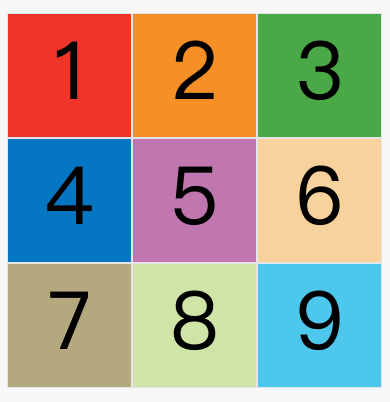
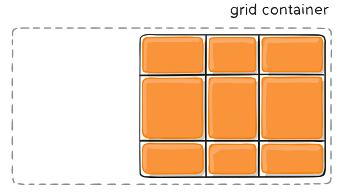
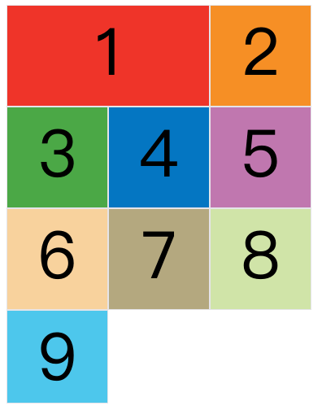

CSS 003Grid网格布局
一、概述
网格布局（Grid）是最强大的 CSS 布局方案。
它将网页划分成一个个网格，可以任意组合不同的网格，做出各种各样的布局。以前，只能通过复杂的 CSS 框架达到的效果，现在浏览器内置了。

上图这样的布局，就是 Grid 布局的拿手好戏。
Grid 布局与 Flex 布局有一定的相似性，都可以指定容器内部多个项目的位置。但是，它们也存在重大区别。
Flex 布局是轴线布局，只能指定"项目"针对轴线的位置，可以看作是一维布局。Grid 布局则是将容器划分成"行"和"列"，产生单元格，然后指定"项目所在"的单元格，可以看作是二维布局。Grid 布局远比 Flex 布局强大。
二、基本概念
学习 Grid 布局之前，需要了解一些基本概念。
2.1 容器和项目
采用网格布局的区域，称为"容器"（container）。容器内部采用网格定位的子元素，称为"项目"（item）。
|
|
上面代码中，最外层的元素就是容器，内层的三个元素就是项目。
注意：项目只能是容器的顶层子元素，不包含项目的子元素，比如上面代码的元素就不是项目。Grid 布局只对项目生效。
2.2 行和列
容器里面的水平区域称为"行"（row），垂直区域称为"列"（column）。

上图中，水平的深色区域就是"行"，垂直的深色区域就是"列"。
2.3 单元格
行和列的交叉区域，称为"单元格"（cell）。
正常情况下，n行和m列会产生n x m个单元格。比如，3行3列会产生9个单元格。
2.4 网格线
划分网格的线，称为"网格线"（grid line）。水平网格线划分出行，垂直网格线划分出列。
正常情况下，n行有n + 1根水平网格线，m列有m + 1根垂直网格线，比如三行就有四根水平网格线。

上图是一个 4 x 4 的网格，共有5根水平网格线和5根垂直网格线。
三、容器属性
Grid 布局的属性分成两类。一类定义在容器上面，称为容器属性；另一类定义在项目上面，称为项目属性。这部分先介绍容器属性。
3.1 display 属性
display: grid指定一个容器采用网格布局。
|
|

上图是display: grid的效果。
默认情况下，容器元素都是块级元素，但也可以设成行内元素。
|
|
上面代码指定div是一个行内元素，该元素内部采用网格布局。

上图是display: inline-grid的效果。
注意，设为网格布局以后，容器子元素（项目）的float、display: inline-block、display: table-cell、vertical-align和column-*等设置都将失效。
3.2 grid-template-columns 属性，grid-template-rows 属性
容器指定了网格布局以后，接着就要划分行和列。
grid-template-columns属性定义每一列的列宽，
grid-template-rows属性定义每一行的行高。
|
|
上面代码指定了一个三行三列的网格，列宽和行高都是100px。

除了使用绝对单位，也可以使用百分比。
|
|
1）repeat()
有时候，重复写同样的值非常麻烦，尤其网格很多时。这时，可以使用repeat()函数，简化重复的值。上面的代码用repeat()改写如下。
|
|
repeat()接受两个参数，第一个参数是重复的次数（上例是3），第二个参数是所要重复的值。
repeat()重复某种模式也是可以的。
|
|
上面代码定义了6列，第一列和第四列的宽度为100px，第二列和第五列为20px，第三列和第六列为80px。

（2）auto-fill 关键字
有时，单元格的大小是固定的，但是容器的大小不确定。如果希望每一行（或每一列）容纳尽可能多的单元格，这时可以使用auto-fill关键字表示自动填充。
|
|
上面代码表示每列宽度100px，然后自动填充，直到容器不能放置更多的列。

（3）fr 关键字
为了方便表示比例关系，网格布局提供了fr关键字（fraction 的缩写，意为"片段"）。如果两列的宽度分别为1fr和2fr，就表示后者是前者的两倍。
|
|
上面代码表示两个相同宽度的列。

fr可以与绝对长度的单位结合使用，这时会非常方便。
|
|
上面代码表示，第一列的宽度为150像素，第二列的宽度是第三列的一半。

（4）minmax()
minmax()函数产生一个长度范围，表示长度就在这个范围之中。它接受两个参数，分别为最小值和最大值。
|
|
上面代码中，minmax(100px, 1fr)表示列宽不小于100px，不大于1fr。
（5）auto 关键字
auto关键字表示由浏览器自己决定长度。
|
|
上面代码中，第二列的宽度，基本上等于该列单元格的最大宽度，除非单元格内容设置了min-width，且这个值大于最大宽度。
（6）网格线的名称
grid-template-columns属性和grid-template-rows属性里面，还可以使用方括号，指定每一根网格线的名字，方便以后的引用。
|
|
上面代码指定网格布局为3行 x 3列，因此有4根垂直网格线和4根水平网格线。方括号里面依次是这八根线的名字。
网格布局允许同一根线有多个名字，比如[fifth-line row-5]。
（7）布局实例
grid-template-columns属性对于网页布局非常有用。两栏式布局只需要一行代码。
|
|
上面代码将左边栏设为70%，右边栏设为30%。
传统的十二网格布局，写起来也很容易。
|
|
3.3 grid-row-gap 属性，grid-column-gap 属性，grid-gap 属性
grid-row-gap属性设置行与行的间隔（行间距），
grid-column-gap属性设置列与列的间隔（列间距）。
|
|
上面代码中，grid-row-gap用于设置行间距，grid-column-gap用于设置列间距。

grid-gap属性是grid-column-gap和grid-row-gap的合并简写形式，语法如下。
|
|
因此，上面一段 CSS 代码等同于下面的代码。
|
|
如果grid-gap省略了第二个值，浏览器认为第二个值等于第一个值。
根据最新标准，上面三个属性名的grid-前缀已经删除，grid-column-gap和grid-row-gap写成column-gap和row-gap，grid-gap写成gap。
3.4 grid-template-areas 属性
网格布局允许指定"区域"（area），一个区域由单个或多个单元格组成。grid-template-areas属性用于定义区域。
|
|
上面代码先划分出9个单元格，然后将其定名为a到i的九个区域，分别对应这九个单元格。
多个单元格合并成一个区域的写法如下。
|
|
上面代码将9个单元格分成a、b、c三个区域。
下面是一个布局实例。
|
|
上面代码中，顶部是页眉区域header，底部是页脚区域footer，中间部分则为main和sidebar。
如果某些区域不需要利用，则使用"点"（.）表示。
|
|
上面代码中，中间一列为点，表示没有用到该单元格，或者该单元格不属于任何区域。
注意，区域的命名会影响到网格线。每个区域的起始网格线，会自动命名为区域名-start，终止网格线自动命名为区域名-end。
比如，区域名为header，则起始位置的水平网格线和垂直网格线叫做header-start，终止位置的水平网格线和垂直网格线叫做header-end。
3.5 grid-auto-flow 属性
划分网格以后，容器的子元素会按照顺序，自动放置在每一个网格。默认的放置顺序是"先行后列"，即先填满第一行，再开始放入第二行，即下图数字的顺序。

这个顺序由grid-auto-flow属性决定，默认值是row，即"先行后列"。也可以将它设成column，变成"先列后行"。
|
|
上面代码设置了column以后，放置顺序就变成了下图。

grid-auto-flow属性除了设置成row和column，还可以设成row dense和column dense。这两个值主要用于，某些项目指定位置以后，剩下的项目怎么自动放置。
下面的例子让1号项目和2号项目各占据两个单元格，然后在默认的grid-auto-flow: row情况下，会产生下面这样的布局。

上图中，1号项目后面的位置是空的，这是因为3号项目默认跟着2号项目，所以会排在2号项目后面。
现在修改设置，设为row dense，表示"先行后列"，并且尽可能紧密填满，尽量不出现空格。
|
|
上面代码的效果如下。

上图会先填满第一行，再填满第二行，所以3号项目就会紧跟在1号项目的后面。8号项目和9号项目就会排到第四行。
如果将设置改为column dense，表示"先列后行"，并且尽量填满空格。
|
|
上面代码的效果如下。

上图会先填满第一列，再填满第2列，所以3号项目在第一列，4号项目在第二列。8号项目和9号项目被挤到了第四列。
3.7 justify-content 属性，align-content 属性，place-content 属性
justify-content属性是整个内容区域在容器里面的水平位置（左中右），
align-content属性是整个内容区域的垂直位置（上中下）。
|
|
这两个属性的写法完全相同，都可以取下面这些值。（下面的图都以justify-content属性为例，align-content属性的图完全一样，只是将水平方向改成垂直方向。）
start - 对齐容器的起始边框。

end - 对齐容器的结束边框。

center - 容器内部居中。

stretch - 项目大小没有指定时，拉伸占据整个网格容器。

space-around - 每个项目两侧的间隔相等。所以，项目之间的间隔比项目与容器边框的间隔大一倍。

space-between - 项目与项目的间隔相等，项目与容器边框之间没有间隔。

space-evenly - 项目与项目的间隔相等，项目与容器边框之间也是同样长度的间隔。

place-content属性是align-content属性和justify-content属性的合并简写形式。
|
|
下面是一个例子。
|
|
如果省略第二个值，浏览器就会假定第二个值等于第一个值。
3.8grid-auto-columns 属性，grid-auto-rows 属性
有时候，一些项目的指定位置，在现有网格的外部。比如网格只有3列，但是某一个项目指定在第5行。这时，浏览器会自动生成多余的网格，以便放置项目。
grid-auto-columns属性和grid-auto-rows属性用来设置，浏览器自动创建的多余网格的列宽和行高。它们的写法与grid-template-columns和grid-template-rows完全相同。如果不指定这两个属性，浏览器完全根据单元格内容的大小，决定新增网格的列宽和行高。
下面的例子里面，划分好的网格是3行 x 3列，但是，8号项目指定在第4行，9号项目指定在第5行。
|
|
上面代码指定新增的行高统一为50px（原始的行高为100px）。

3.9 grid-template 属性，grid 属性
grid-template属性是grid-template-columns、grid-template-rows和grid-template-areas这三个属性的合并简写形式。
grid属性是grid-template-rows、grid-template-columns、grid-template-areas、 grid-auto-rows、grid-auto-columns、grid-auto-flow这六个属性的合并简写形式。
从易读易写的角度考虑，还是建议不要合并属性，所以这里就不详细介绍这两个属性了。
四、项目属性
下面这些属性定义在项目上面。
4.1 grid-column-start 属性，grid-column-end 属性，grid-row-start 属性，grid-row-end 属性
项目的位置是可以指定的，具体方法就是指定项目的四个边框，分别定位在哪根网格线。
grid-column-start属性：左边框所在的垂直网格线
grid-column-end属性：右边框所在的垂直网格线
grid-row-start属性：上边框所在的水平网格线
grid-row-end属性：下边框所在的水平网格线
|
|
上面代码指定，1号项目的左边框是第二根垂直网格线，右边框是第四根垂直网格线。

上图中，只指定了1号项目的左右边框，没有指定上下边框，所以会采用默认位置，即上边框是第一根水平网格线，下边框是第二根水平网格线。
除了1号项目以外，其他项目都没有指定位置，由浏览器自动布局，这时它们的位置由容器的grid-auto-flow属性决定，这个属性的默认值是row，因此会"先行后列"进行排列。读者可以把这个属性的值分别改成column、row dense和column dense，看看其他项目的位置发生了怎样的变化。
下面的例子是指定四个边框位置的效果。
|
|

这四个属性的值，除了指定为第几个网格线，还可以指定为网格线的名字。
|
|
上面代码中，左边框和右边框的位置，都指定为网格线的名字。
这四个属性的值还可以使用span关键字，表示"跨越"，即左右边框（上下边框）之间跨越多少个网格。
|
|
上面代码表示，1号项目的左边框距离右边框跨越2个网格。

这与下面的代码效果完全一样。
|
|
使用这四个属性，如果产生了项目的重叠，则使用z-index属性指定项目的重叠顺序。
4.2 grid-column 属性，grid-row 属性
grid-column属性是grid-column-start和grid-column-end的合并简写形式，
grid-row属性是grid-row-start属性和grid-row-end的合并简写形式。
|
|
下面是一个例子。
|
|
上面代码中，项目item-1占据第一行，从第一根列线到第三根列线。
这两个属性之中，也可以使用span关键字，表示跨越多少个网格。
|
|
上面代码中，项目item-1占据的区域，包括第一行 + 第二行、第一列 + 第二列。
斜杠以及后面的部分可以省略，默认跨越一个网格。
|
|
上面代码中，项目item-1占据左上角第一个网格。
4.3 grid-area 属性
grid-area属性指定项目放在哪一个区域。
|
|
上面代码中，1号项目位于e区域，效果如下图。

grid-area属性还可用作grid-row-start、grid-column-start、grid-row-end、grid-column-end的合并简写形式，直接指定项目的位置。
|
|
下面是一个例子。
|
|
4.4 justify-self 属性，align-self 属性，place-self 属性
justify-self属性设置单元格内容的水平位置（左中右），跟justify-items属性的用法完全一致，但只作用于单个项目。
align-self属性设置单元格内容的垂直位置（上中下），跟align-items属性的用法完全一致，也是只作用于单个项目。
|
|
这两个属性都可以取下面四个值。
start：对齐单元格的起始边缘。
end：对齐单元格的结束边缘。
center：单元格内部居中。
stretch：拉伸，占满单元格的整个宽度（默认值）。
下面是justify-self: start的例子。
|
|

place-self属性是align-self属性和justify-self属性的合并简写形式。
|
|
下面是一个例子。
|
|
如果省略第二个值，place-self属性会认为这两个值相等。
五、参考链接
A Complete Guide to Grid, by Chris House
Understanding the CSS Grid Layout Module, by Ian Yates
How to Build an Off-Canvas Navigation With CSS Grid, Ian Yates
Introduction to the CSS Grid Layout With Examples, Dogacan Bilgili
Learn CSS Grid, Jonathan Suh
How I stopped using Bootstrap’s layout thanks to CSS Grid, Cédric Kui